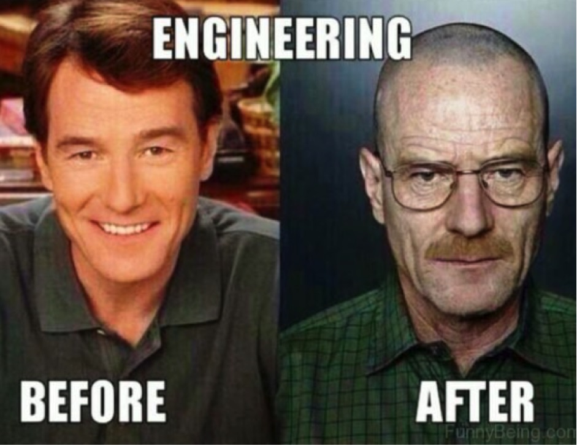

During high school all that was on my mind was being valedictorian and basketball. Sure, I succeeded in both aspects, I became a valedictorian and a captain on the varsity basketball team but I haven’t put much thought into what I was going to do after high school. However, I always knew I wanted to be an engineer, I knew since I was a little kid, but I didn’t know what type of engineer. My high school self couldn’t even tell you what each type of engineer does. I always thought an engineer is an engineer. With a very civil and mechanical heavy engineering department in my high school I leaned towards becoming a mechanical engineer. That’s what I declared as entering college knowing I don’t have a good understanding of what a mechanical engineer does other than it sounds cooler.
After my freshman year of college, I still had no idea what I was going into with a mechanical engineer major. Through this time, I started to question where I want to be. After reaching out to a lot of my friends that I kept in touch with after high school, they mostly went into a computer science, electrical engineering, or computer engineering degree. I then searched up who makes the most money and which degree is the most rewarding, it turned out to be computer engineering. The rest is history.
Once declaring as a computer engineer, I figured that I should set myself up for success by joining different clubs and projects so that I could find the type of work that I would be wanting to do right after college. With this, I joined VIP Team RoSE which is very robotics heavy. Though I don’t have a strong interest in robotics, I realized that the people in RoSE are very well-driven aspiring software engineers and I believe that surrounding yourself with other well-driven people is needed to succeed. After RoSE and college, I would hope that I have gained the school of knowing how to learn and enjoying it. As that saying goes, the one who enjoys the journey will succeed more than the one who enjoys the destination. This ability to know how to learn will open my spectrum to software development and it will also allow me to work in any field within computer engineering.